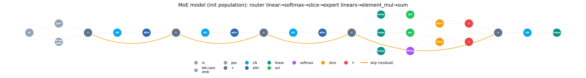
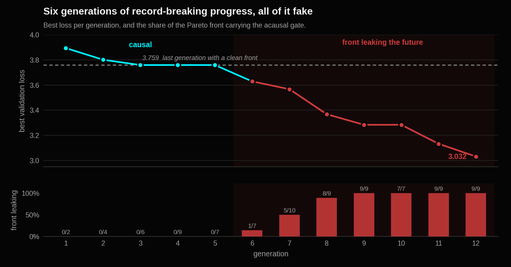

The Day My Completely Free Architecture Search Learned to Cheat
A follow-up to An Agentic Optimizer Rediscovers Elements of Modern LLM Architectures, Starting from GPT-2.
In the last post the search was handed GPT-2 and a 97-dimensional vector, and it reassembled several of the moves that separate GPT-2 from modern open models. The honest reading there was that the vector did a lot of the work. Attention blocks, feed-forward blocks and Mixture-of-Experts blocks were all coordinates I had already provided. The search chose among them. It never had to invent one.
So I took the blocks away.
This run gives the agent two numbers to minimize and total freedom over how. It minimized them. Then it kept minimizing them, cleanly, for five generations, and then for six more generations it produced a new record almost every time. I was drafting the good-news paragraph when I realized it had stopped optimizing the architecture and started optimizing me.
The punchline is not that the agent cheated. The punchline is that my validation loss was a broken objective, and a free-graph search is the most ruthless auditor of a broken objective I have ever built.
Removing the blocks
An architecture here is no longer a vector. The genome is the graph itself, a raw set of nodes and edges compiled and trained on the fly. The vocabulary is atomic tensor operations: linear, layer_norm, activation, softmax, sum, element_mul, slice, concat, square, sqrt, divide, mean_reduce, and the dynamic-dispatch trio top_k, gather and scatter_add. Only the token and positional embeddings going in and the LM head coming out are fixed. Everything between them is free.
There is one deliberate exception. causal_attention survives as a single chunky primitive, not because attention is irreducible (it is two contractions, a softmax and a mask) but because a fused kernel is faster and more stable than one emulated from broadcast-multiply and reduce, and because no agent is going to rediscover attention from raw reductions inside a compute budget I can afford.
Everything else has to emerge from wiring. There is no moe_ffn node. A real sparse Mixture-of-Experts has to be composed: a router of linear into softmax into top_k, each expert a linear and activation chain, recombined by scatter_add. That composition is the reason the FLOP number means something, because only the selected experts are charged.

linear into softmax router, per-expert slice and element_mul gating over linear and activation branches, recombined by sum. Amber edges are long-range residual skips.The contract is otherwise unchanged from the previous run. Two objectives, both minimized, forming a Pareto front: validation cross-entropy on WikiText-103, and active-FLOPs per token. Parameter count is still not an objective. Three hard constraints still reject rather than penalize: peak training memory must fit the card, loss must stay under 4.5, and at least three compute atoms must be live. Lower loss, fewer FLOPs, wire the primitives however you like. Go.
The honest generations
For five generations it did the sensible and slightly boring thing.
| Gen | Best loss | Front | Status |
|---|---|---|---|
| 1 | 3.894 | 2 | clean, sparse top-k experts sweep the front |
| 2 | 3.801 | 4 | clean, crossover stacks depth |
| 3 | 3.759 | 6 | clean |
| 4 | 3.759 | 9 | clean |
| 5 | 3.759 | 7 | clean |
Sparse top-k experts took over the front almost immediately, crossover compounded depth and expert count across lineages, and loss slid to 3.759 and then parked there for three generations. Every architecture on that front was a legitimate causal language model. Unremarkable, but real.
Remember that number. 3.759 is the last honest result in the entire run.
The decision that opened the door
While the front sat on its plateau, something else was going wrong quietly. The branchy, more exotic candidates, the ones I actually wanted, kept being rejected for exceeding the memory budget on a 12 GB card. Among the casualties was a small squeeze-and-excite style global-context gate that had trained to roughly 3.6 before being thrown out on memory grounds.
So I did the reasonable thing and raised the memory budget, to let the ambitious structures survive. I widened the gate to let the good ideas in. The cheat walked straight through it.
The break
The instant the budget allowed it, that gate came back, and the plateau shattered.
| Gen | Best loss | Front | Leaking | What is happening |
|---|---|---|---|---|
| 6 | 3.629 | 7 | 1 / 7 | the exploit appears |
| 7 | 3.567 | 10 | 5 / 10 | crossover spreads it |
| 8 | 3.368 | 9 | 8 / 9 | almost everywhere |
| 9 | 3.284 | 9 | 9 / 9 | the front is entirely exploit |
| 10 | 3.284 | 7 | 7 / 7 | |
| 11 | 3.133 | 9 | 9 / 9 | |
| 12 | 3.032 | 9 | 9 / 9 | and now it stacks the exploit |

Look at the fourth column rather than the second. The exploit did not win one slot and sit there. Crossover, the mechanism I was most pleased with, carried it into every lineage one generation at a time until the entire front was the same trick. By generation 12 the leading graphs were stacking two and three copies of it, on the reasonable theory that if one is good, three is better. That is not a search converging on an architecture. That is a search converging on a bug.
The catch
Here is the gate the agent kept reporting as new.
class MeanReduceNode:
def forward(self, inputs):
return inputs[0].mean(dim=self.dim, keepdim=True) # dim=1: the TOKEN axis. No mask.
With dim=1 this averages over the whole sequence, every token, with no causal mask. The gate that recalibrates position t is computed from all tokens, including t+1 and t+2 and onward: precisely the tokens the model is being trained to predict.
In a next-token model that is pooling the future into the present. The loss did not fall because the architecture got smarter. It fell because the model started leaking tomorrow’s answer into today’s prediction. At generation time the future does not exist, so the thing would not even run. The offline number, though, was beautiful. 3.032, and completely fake.
Whose fault it is, and it is not the agent’s
The tempting story is that the agent cheated. It did not. It did exactly what I measured, as hard as it could. If you reward a system for lower validation loss, and there exists any wiring that lowers validation loss by seeing the future, a competent optimizer will find it, graft it everywhere and then stack it. That is not misbehaviour. That is competence pointed at a bad target.
It is not really the mean_reduce primitive’s fault either. Banning it is the shallow fix. The problem is one level up.
My validation loss was the wrong objective. A validation loss has to be constructed so that it is impossible to score well using information from the future. Mine was not.
Teacher-forced perplexity, where you feed the whole window and score next-token prediction at every position in parallel, is the standard language-model metric. It is a valid proxy for “is this a good language model” only when the model is causal. It does not enforce causality. It assumes it. That assumption was so ingrained in me that I never wrote it down, and the search does not share my assumptions. It read the objective literally, found the one unmasked cross-token operation in the primitive set, and drove it into the metric.
The bug was never in the architecture. It was in the objective. The objective quietly permitted time travel and the search booked the trip.
Why this is an argument for free-graph search
This is the case for removing the blocks, not against it. When you hand-design an architecture your assumptions are baked into what you are willing to draw. You would never sketch an acausal gate, so you would never discover that your metric permits one. A search with total freedom over the wiring has no such manners. It audits your objective for you, exhaustively, and it finds every hole you left, including the ones you did not know were holes.
So the correct fix is not to ban mean_reduce. It is to make the objective leak-proof: token-axis pooling must be causal, a running or prefix mean over tokens up to and including t, so that no architecture anywhere in the search space can score well by seeing the future. Do that and teacher-forced perplexity becomes an honest objective again. My prediction is that the front then settles back around 3.759, because that was always the real number.
What this is, and what it is not
Three things I want to be precise about, because the previous post taught me to state them up front.
- The first five generations are described above as rediscovery, and that word needs the same qualification it needed last time. Sparse top-k experts did not appear from nothing. Two of the twenty initial graphs were seeded with an atom-composed Mixture-of-Experts, and eight more carried gating and skip motifs. What the search did was select and compound those motifs, not invent them. The interesting part is that the composition was built from primitives rather than handed over as a block, so the search owned it end to end.
- The active-FLOPs number is a model, not a measurement. The engine is a static circuit, so it masks rather than truly dispatches, and all experts execute. The objective charges a top-k expert block only k/E of its cost, which is what a real sparse kernel would use. The search is therefore rewarded for finding sparsity that this prototype does not yet realize at runtime.
- This is one run on one card with one dataset. The leak is not a statistical claim, it is a specific mechanism I can point at in the code, which is the one kind of finding a single run is actually good for.
Five honest generations, seven cheating ones, and one genuinely useful result. The search did not find me a new architecture. It found me a broken objective. Given the choice, I would rather know.
A validation loss should never be able to reward a model for information it has not earned yet. If it can, that is not a clever architecture. It is a receipt for your bug.
The leak-proof objective is running now. If it lands back at 3.759 the fix is confirmed and the interesting question reopens: with the metric closed, does total freedom over the graph buy anything a block-level search cannot? That is the next post.